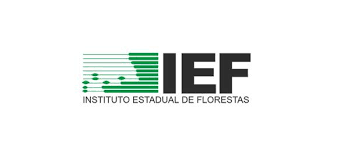
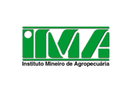
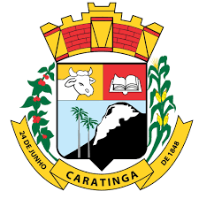
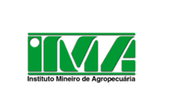
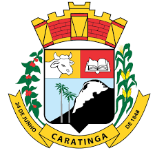

Nossos Parceiros:

 



Caro Produtor e Trabalhador rural; a Aquino Consultoria é uma empresa que presta serviços no ramo de crédito rural, topografia, questões ambientais,
e regularização do imóvel rural. Fazemos também o Cadastro Ambiental Rural que é o C.A.R, hoje exigido pelos órgãos ambientais. A Aquino Consultoria é
a “Correspondente Bancária do Agronegócio” junto ao Banco do Brasil, trabalhando com crédito rural ( Pronaf Custeio, Pronaf Investimento, Pronamp e Agricultura Empresarial)
Somos uma consultoria especializada em planejamento e desenvolvimento rural; enraizados na missão de promover o crescimento econômico,
social e ambiental em regiões rurais. Acreditamos que o sucesso agrícola não apenas eleva a qualidade de vida dos agricultores, mas também fortalecetoda a cadeia produtiva, contribuindo para um ambiente rural próspero.
Você é produtor rural? Clique acima e conheça o CAR!
Valorize o meio ambiente e regularize sua propriedade com o Cadastro Ambiental Rural ! Por que aderir ao CAR?
Compromisso Ambiental:
Legalidade e Segurança:
Acesso a Benefícios:
Nossos Serviços: Cadastro Ambiental com agilidade e eficiência. Consultoria especializada para orientar você em cada etapa do processo. Compromisso com a sustentabilidade e respeito ao seu negócio.
Entre em contato conosco para obter mais informações:
Telefone:(33) 3321-7437
Endereço: R. Cel. Pedro Martins,225- Sala 08- Centro- Caratinga- MG
Telefone: (33) 3321-7437 ou 99938-7437
Endereço: R. Geraldo Marques de Souza,88- Centro- Inhapim- MG
Telefone: (33) 3315-2212 ou 99948-4975
Endereço: R. José saturnino da Silva, 215- Centro- Bom Jesus do Galho- MG
Telefone: (33) 999563531